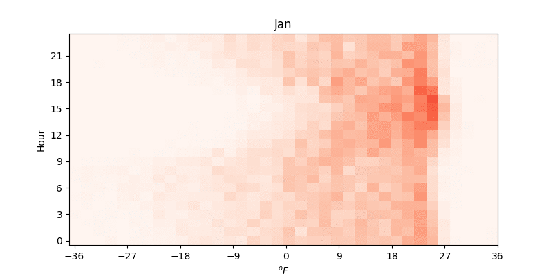
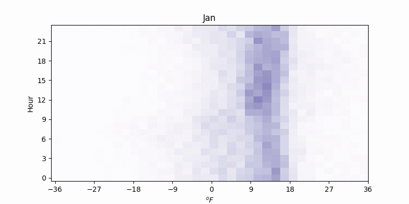

Tthis animated plot of a heat map of the temperature difference between Mt. Washington and Whitefield, New Hampshire, a lowland station which is a also a great frost hollow (elevation difference between the two is 1600 m). Positive means Whitefield is warmer than Mt. Washington. 9°F difference is equivalent to 3.13°C / km. Second plot is the dewpoint difference, which has a lot less seasonal and hourly difference. Hour is 24 hour time of course. Darker color = more frequent, looks kinda noisy as the sample size isn’t big. 
We can see the temperature difference very rarely exceeds the environmental lapse rate; with the very steep lapse rates that slightly "overshoot" overcoming on summer afternoons. Especially in winter, temperature inversions are common in early morning hours. The dewpoint rarely has a lapse rate range.
